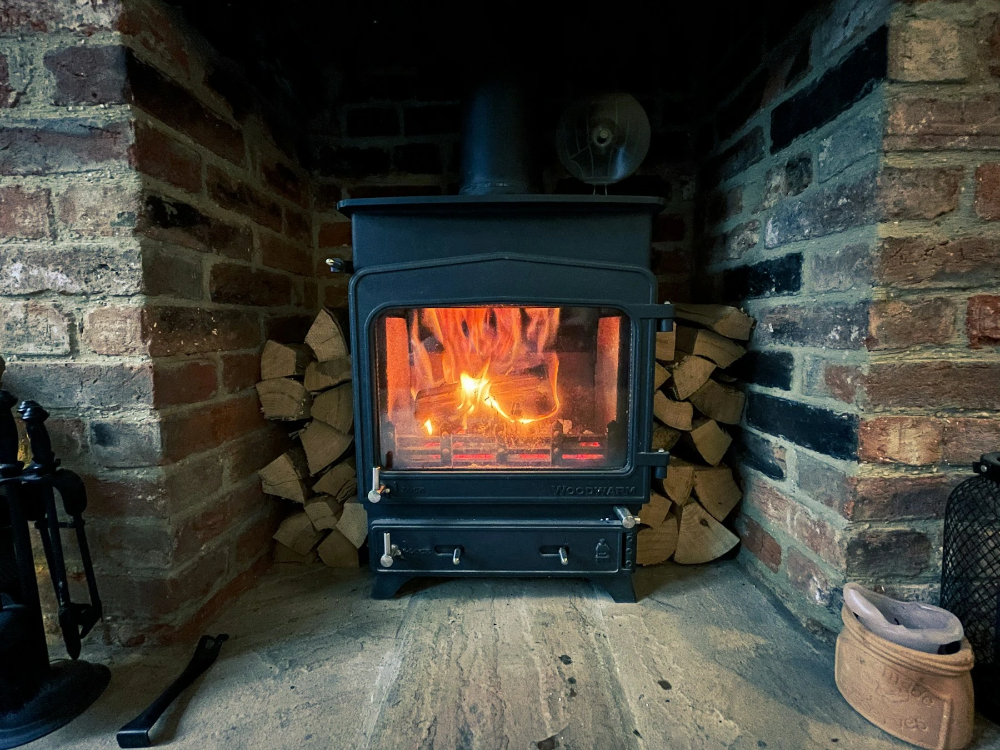

Bulk bags
Mixed kiln dried hardwood
Approx. 1 m³ bulk bag
An ash, birch and oak mix for a well-stocked log store.
£125.00per bag

YOUR LOCAL FIREWOOD & COAL SUPPLIER
Kiln dried firewood. Fireside essentials.
Friendly local delivery across Altrincham.
Approx. 1 m³ bulk bag
An ash, birch and oak mix for a well-stocked log store.

40 litre net
A generous net of premium kiln dried ash.

25 kg bag
Smokeless fuel. Confirm the exact fuel and appliance suitability before ordering.

Looking for logs for sale in Altrincham? Choose kiln dried ash, birch or oak in convenient nets and bulk bags, with local delivery arranged for your home.
From a farm log yard in 2009 to the homes of Altrincham today, our family business is built around supplying firewood with friendly, practical service.
Whether you're topping up your log basket or filling your store for the season, we're here to help you choose the right supply.
Meet your local supplier ↗Browse logs, solid fuels and accessories. Add the quantities you need to your basket.
Share your postcode, delivery address and access details with your itemised request.
We'll agree availability, the final price and a suitable delivery day before you commit.
Have another question? We're always happy to help you choose.
Ask the team ↗Nets are easy to handle and suit smaller storage spaces. Bulk bags are convenient for larger supplies, but need vehicle access to the drop-off point. Check the listed volume for each product.
Keep logs sheltered from rain, raised off the ground and well ventilated. Store only what fits safely in your available space.
The existing supplier advertises free local delivery, with a minimum of 20 nets for net orders. We'll confirm eligibility, any delivery charge and access requirements when responding to your enquiry.
Follow your appliance manufacturer's guidance and the requirements for your location. Ask us to confirm the exact solid fuel before ordering. A smokeless description alone does not establish suitability for every appliance.
Find your firewood, build your basket and leave the delivery details to us.